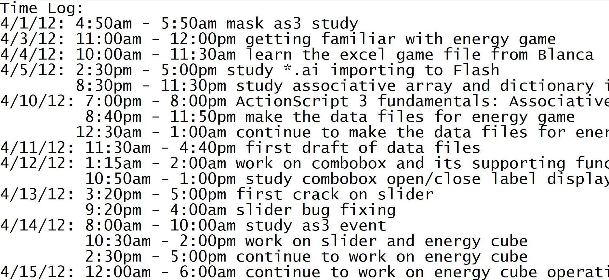

This web app is created for the Course CIS524(Comparative Programming Languages). This web app takes a log file which strictly follows the below given format.
The web app will output the total time taken to complete a certain project. This will be calculated by the time given in the log file.